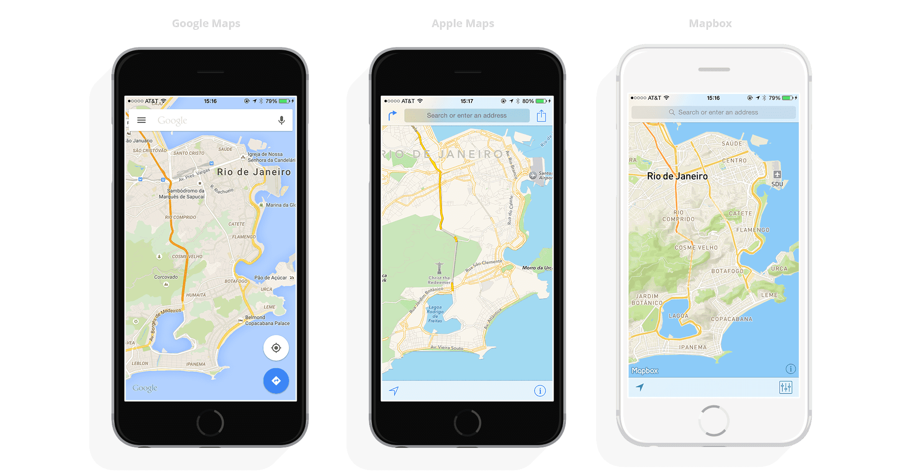
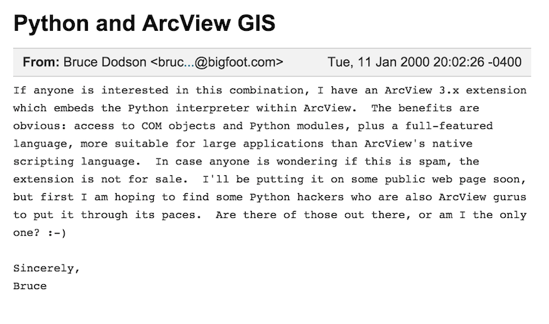
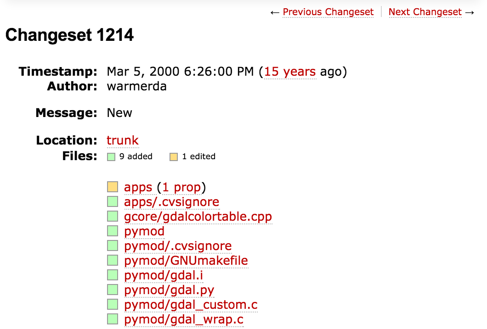
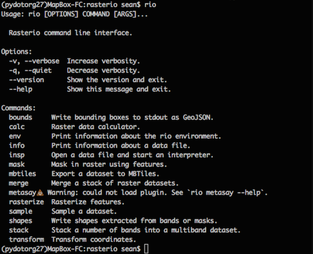

Writing, Running, and Distributing
Modern Python GIS Software
Sean Gillies ∙ Mapbox
GeoRodeo 2015 ∙ Austin ∙ May 22
Mapbox Front Office
The Back Office
A Brief History of Python and GIS

In the Beginning there was AVPython
Then GDAL
After GDAL
- PyTerra, MapServer (2002)
- ArcGIS (2004), QGIS (2006?)
- 15 years of Python and GIS
Why Python Today?
- Scientific computing: Numpy, SciPy, scikit-learn &c
- A Very Big GIS Product
- It's still fun to use
In this Talk
- How to write good Python programs
- How to wrangle and distribute them
- How to deploy and run them
Not in this Talk
- Web frameworks
- Graphical user interfaces
Writing Python
- Making it good
- Making it fast
Test Early, Test Often


Pytest
"""script.py: print 'Spam and Eggs'."""
def get_msg():
return "Spam and Egs"
# This is a test.
def test_get_msg():
assert get_msg() == "Spam and Eggs"
if __name__ == '__main__':
print(get_msg())
Assertion Introspection
$ py.test script.py
=================================== FAILURES ===================================
_________________________________ test_get_msg _________________________________
def test_get_msg():
> assert get_msg() == "Spam and Eggs"
E assert 'Spam and Egs' == 'Spam and Eggs'
E - Spam and Egs
E + Spam and Eggs
E ? +
script.py:10: AssertionError
=========================== 1 failed in 0.01 seconds ===========================
Coverage
$ py.test script.py --cov script --cov-report=term-missing
============================= test session starts ==============================
platform darwin -- Python 2.7.9 -- py-1.4.26 -- pytest-2.6.4
plugins: cov
collected 1 items
script.py .
--------------- coverage: platform darwin, python 2.7.9-final-0 ----------------
Name Stmts Miss Cover Missing
--------------------------------------
script 6 1 83% 14
=========================== 1 passed in 0.01 seconds ===========================
Slow code, fast code
# C style.
nums = []
for i in range(100):
nums.append(i)
# Python style.
nums = [i for in range(100)]
Not just less code – faster
$ python -m timeit -s "ns=[]" "for i in xrange(1000): ns.append(i)"
10000 loops, best of 3: 76.4 usec per loop
$ python -m timeit -s "ns=[i for i in xrange(1000)]"
100000000 loops, best of 3: 0.0108 usec per loop
Even faster: Numpy ufuncs
# Initialized with -s "a = list(range(100000))"
$ python -m timeit "[val + 5 for val in a]"
100 loops, best of 3: 4.99 msec per loop
# Initialiazed with
# -s "import numpy; a = list(range(100000)); a = numpy.array(a)"
$ python -m timeit "a+5"
10000 loops, best of 3: 69.9 usec per loop
Running Python
- Parallelism
- Dependency Management
Multiprocessing
from multiprocessing import Pool
def f(x):
return x*x
if __name__ == '__main__':
with Pool(5) as p:
print(p.map(f, [1, 2, 3]))
See https://github.com/mapbox/rio-mbtiles for a raster tiling example.
Requirement Hell
- Program A.py requires version 1.2.3 (exactly) of module X
- Program B.py requires version 2.0.0 (or newer) of module X
- How can you get both scripts working at the same time?
Virtualenv
- Every site/service/app has its own "venv" directory.
- And its own "requirements.txt" file.
Virtualenv...
$ virtualenv venv
$ source venv/bin/activate
(venv)$ pip install -r requirements.txt

Docker Example
$ docker run -itd --name tfrs \
> -v "/Users/sean/code/rasterio/tests/data:/mnt/data:ro" \
> mapbox/travis-frs:pre0 /bin/bash
87d7321ad492574f82c7957670c15e0067d4fcd5b3dd803bc3cef6fadd2e0aeb
$ docker exec tfrs rio shapes --mask /mnt/data/RGB.byte.tif \
> | geojsonio
Distributing Python
- Publishing wheels
- Pluggability
Advantages of wheels
- Faster installation for pure python and native C extension packages.
- Avoids arbitrary code execution for installation.
- Installation of a C extension does not require a compiler on Windows or OS X.
Plugins
entry_points={'pytest11': ['pytest_cov = pytest_cov']},
Rasterio Plugins
Conclusion
Writing Python
- Test early and often
- Try pytest
- Use fast Python expressions
- Use Numpy for more speed
Running Python
- Try multiprocessing.Pool
- A virtualenv for every project
- Consider Docker
Distributing Python
- Build wheels to share modules
- Use pip to install modules
- For plugins: setuptools entry points